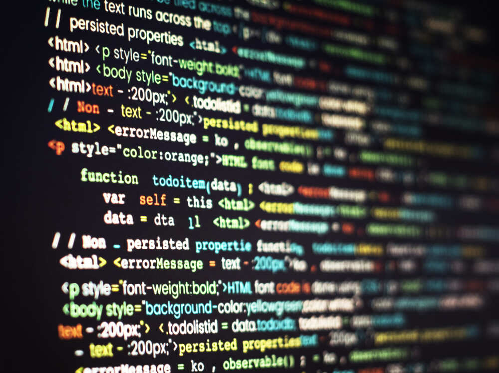

HTML es el lenguaje de marcado estándar que se usa para crear y estructurar el contenido de las páginas web.¿Qué es y para qué sirve?Estructura base: Funciona como el esqueleto de un sitio web.Organización: Indica al navegador dónde van los títulos, párrafos, imágenes y enlaces.No es programación: Es un lenguaje de marcas basado en etiquetas, no un lenguaje de programación.
¿Qué es HTML?Es el Lenguaje de Marcado de Hipertexto.Crea la base de la página con etiquetas como títulos, párrafos e imágenes.Organiza la información para que el navegador la entienda.¿Qué es CSS?Significa Hojas de Estilo en Cascada.Controla los colores, las fuentes, los espacios y las posiciones de los elementos.Modifica el diseño visual de lo que creaste en HTML sin cambiar el contenido.Si gustas, dime:¿Tienes experiencia previa programando o estás empezando desde cero?¿Quieres que te muestre un ejemplo práctico de código para crear una página básica?

